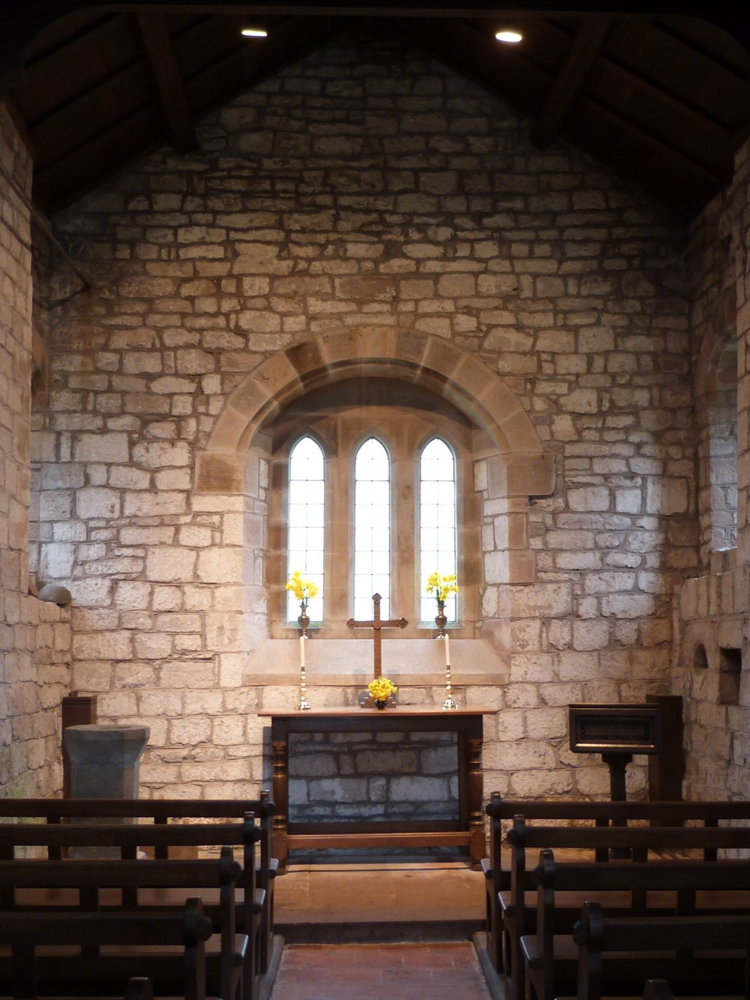

To preserve for the benefit of the townspeople of Brampton and District the historical, architectural and constructional heritage in the area in the form of buildings of particular beauty or historical, architectural or constructional merit.
Learn More Support Us
Brampton Preservation Trust is a registered charity founded in 1981 to serve the historic built environment of Brampton and its surrounding district. The Trust has over the years been involved in the stewardship of a number of notable local buildings, but today, the Trust's work is focused on a single remarkable site: Brampton Old Church, located approximately one mile from the town centre, which the Trust owns and maintains.
The church is one of the oldest ecclesiastical buildings in Cumbria, and the Trust works to keep it in good repair and its doors open to visitors, worshippers, and all who wish to experience this quietly extraordinary piece of local heritage.
All of the Trust's work depends entirely on the generosity of supporters, donors, and volunteers from the local community and further afield.
Loading events…
For the most up-to-date programme, or to enquire about holding an event at the church, please contact the Secretary.
Minutes are published here as PDFs following approval at the subsequent meeting. Meetings are open to all members.
Brampton Preservation Trust is governed by a board of trustees who give their time voluntarily.
For enquiries about the Trust, the church, events, or how to support our work, please get in touch with our Secretary.
Brampton Old Church is among the most historically significant ecclesiastical sites in Cumbria, its origins stretching back over a thousand years. The building reflects centuries of architectural development, adaptation, and community stewardship.
The site was used by a Roman Auxiliary unit for about 25 years.
A place of Christian worship is believed to have been established on this site during the early medieval period, serving the scattered communities of the Brampton area. The first recorded mention of the church is in 1169.
The main structure of the church is dismantled, and the stones relocated to the town for use in altering the Almshouse Chapel there into a Parish Church. The old entrance remains standing for use as a mortuary chapel.
The church is extended at its eastern end and a porch added to the west.
The church is restored at a cost of £150.
The church is declared redundant by the Church of England.
The church is declared redundant by the Church of England.
The church, now in a state of disrepair and with serious structural problems, is acquired by the Brampton Preservation Trust and restoration is carried out at a cost of £40,000 funded by English Heritage.
The Trust continues its work of maintenance, repair and advocacy, keeping the church open and accessible to all who wish to visit.
Brampton Old Church is maintained entirely through voluntary effort and the generosity of supporters. There are several ways you can help us continue this vital work.
A financial contribution of any size makes a direct and lasting difference to the conservation of the church. Donations can be made by contacting the Treasurer or through the collection box in the church.
We welcome volunteers to help with cleaning, maintenance, open days, and special events throughout the year. No specialist skills required, just enthusiasm.
Share news of the church and Trust with friends, family, and community groups. Awareness is among the most valuable resources we have.
To discuss any of the above, please email the Secretary.